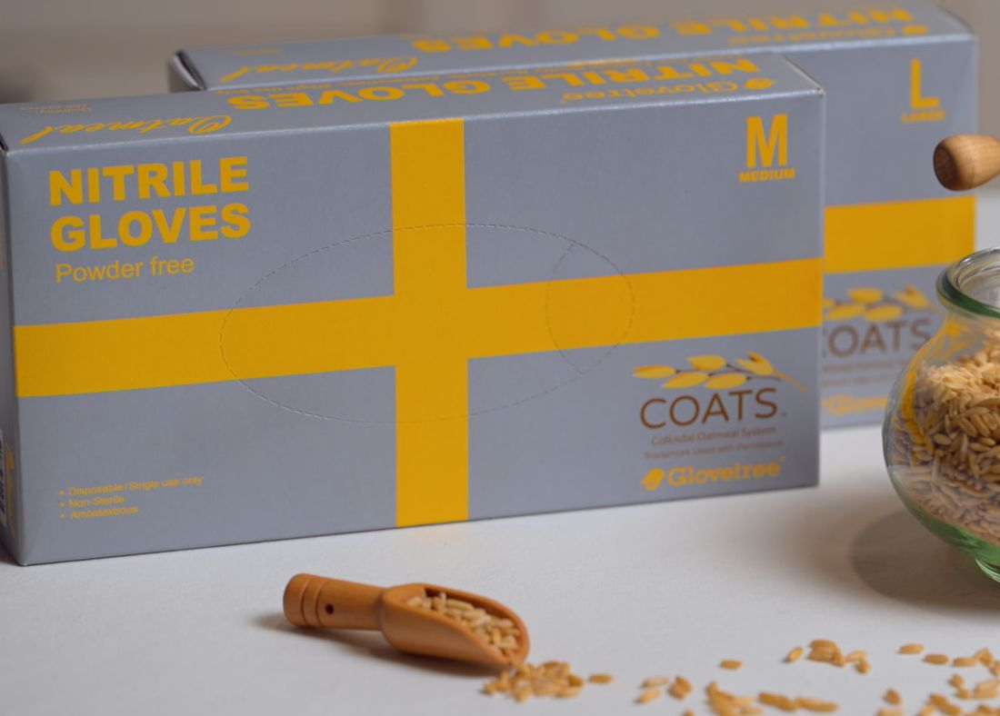
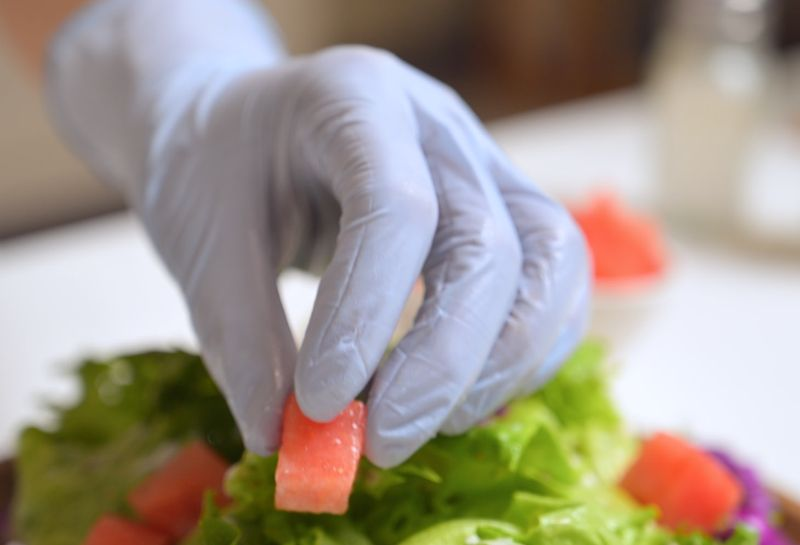
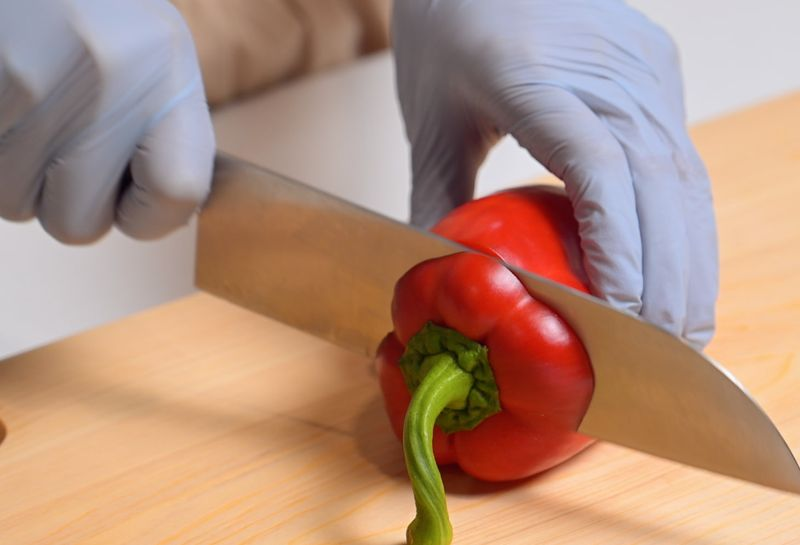
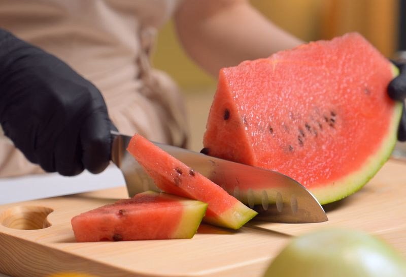
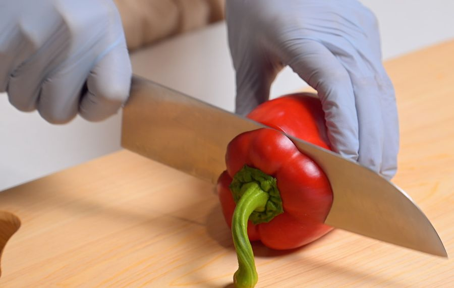
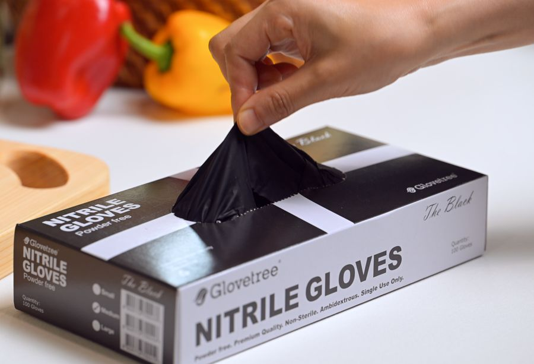
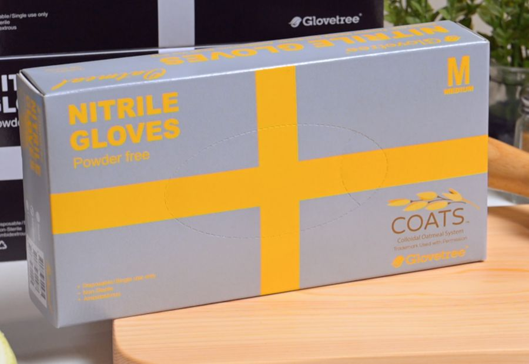
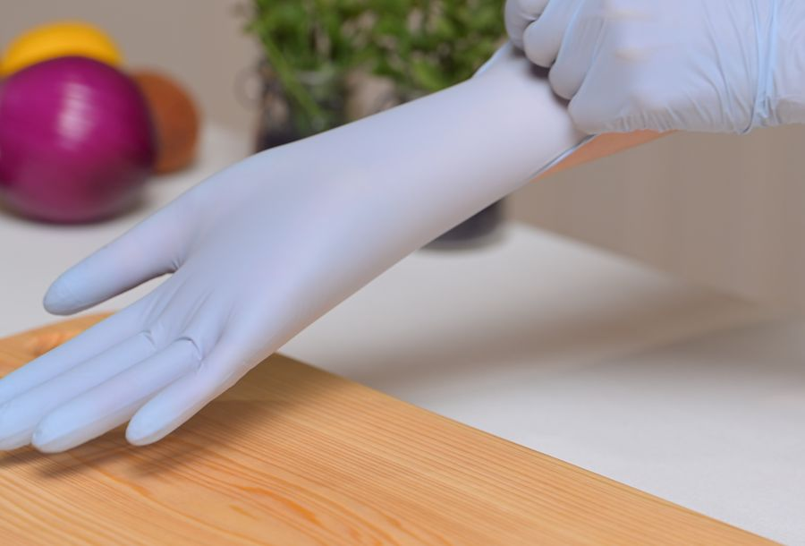
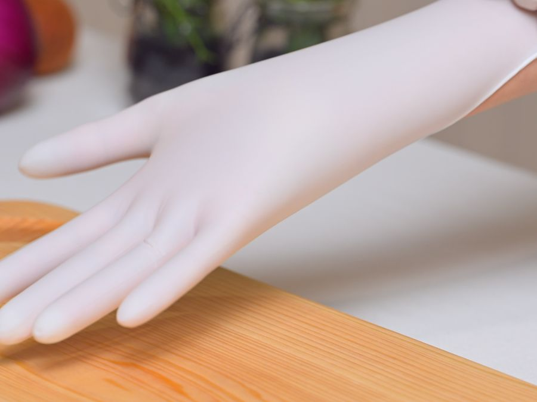
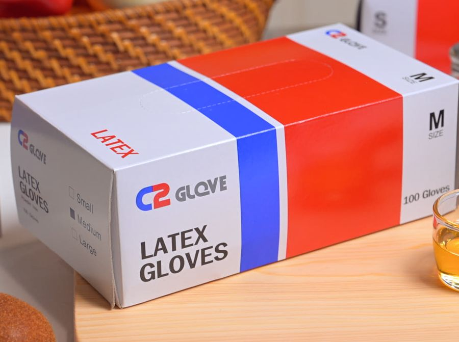

GLOVETREE · 식품용 일회용 장갑
가루도, 천연고무 단백질도, PVC도 넣지 않은
식품용 니트릴 장갑.
LEFT OUT
PROOF
흠 있는 장갑은 백 장에 한두 장까지만 내보냅니다. 식품용인데 병원 검사용과 같은 기준입니다.
니트릴 함량 최소 92%. 남는 자리를 싼 재료로 채우지 않았습니다.
잘라서 당기면 원래 길이의 여섯 배까지 늘어납니다. 얇은데 질깁니다.
말레이시아 Hartalega 공장에서 만들고, 일부러 뜨거운 곳에 두어 삭힌 뒤에도 새 장갑 시험을 통과한 것만 내보냅니다.

COATS · COLLOIDAL OATMEAL SYSTEM
손에 닿는 안쪽 면에 귀리 코팅을 입혀 부드럽게 만들었습니다. 오래 껴도 덜 답답합니다.



LINE UP · 6

02
03
04
05
06
전 라인업 100매 · 무분말 · 식품용. 니트릴 제품은 색상만 다르고 재질 · 규격이 같습니다.
라텍스 알러지가 있으시면 니트릴을 선택하세요.
SIZE
“S는 딱 맞지만 끼고 뺄 때 불편해서 M이 편하다”는 후기가 많습니다. 착탈이 잦으시면 한 치수 크게 고르세요.
※ 손 두께에 따라 차이가 있을 수 있습니다.
FAQ
니트릴 제품을 선택하세요. 천연고무 단백질이 들어 있지 않습니다.
식품용 제품입니다. 박스에 식품용 도안이 인쇄되어 있습니다.
박스에 제조일과 사용기간이 표기되어 있습니다.
1회용 제품입니다. 재사용하지 마세요.
5~40°C, 직사광선과 습기를 피해 보관하세요.
미개봉 상태에서 교환 가능합니다.
니트릴 제품은 색상만 다르고 재질 · 규격은 같습니다.
카톤 단위로 문의 주시면 안내드립니다. a1@a1kor.com
스마트스토어 리뷰 3.6만 개 · 평점 4.73
판매사 ㈜한국에이원 소모품 사업부 · 제조사 Hartalega NGC Sdn. Bhd. · 원산지 말레이시아
BULK · B2B
전화 · 문자 · 카톡으로 문의 주시면 친절히 안내해 드립니다.
010-3994-7100한국에이원 고객센터 · 평일 09:00 ~ 18:00